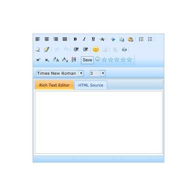

Toolbar Customization allows the toolbar items to be added/removed from the existing toolbar and also to add a custom toolbar in RichTextEditor.
Use Case Scenarios
Toolbar-customization allows you to add your own toolbar in RichTextEditor and also allows customizing the existing toolbar.
Toolbar Customization Application
Using Builder
The following steps explain how to set the Toolbar customization in RTE using Builder.
1. In View, call the rich text editor helper, followed by the Toolbar method with template as argument.
|
View[ASPX] <%=Html.Syncfusion().RichTextEditor("RichTextEditor1") . Toolbar (toolbar => {toolbar. Template (() =>{%> <%=Html.Syncfusion().Button("SaveButton").Text("Save")%> <%=Html.Syncfusion().Rating("rating")%> <%});}) .Render (); %>
|
|
View[cshtml] @{Html.Syncfusion().RichTextEditor("RichTextEditor1").Toolbar(toolbar=> toolbar.Template( @<div> @( Html.Syncfusion().Button("SaveButton").Text("Save")) @{ Html.Syncfusion().Rating("rating").Render();} } </div> )).Render();}
|
2. In the Controller, pass to the View page.
|
[C#] public ActionResult Index() {
return View(); }
|
3. Build and run the application, the RichTextEditor will appear as shown in the following figure.

Figure 202: Toolbar Customization support for RTE
Using Properties Model
The following steps describe how to set the Custom Toolbar in RTE through the properties model.
1. In View, call the rich text editor helper, followed by the Toolbar method with template as argument.
|
View[ASPX] <%=Html.Syncfusion().RichTextEditor("RichTextEditor1") . Toolbar (toolbar =>{toolbar.Template(() =>{%> <%=Html.Syncfusion().Button("SaveButton").Text("Save")%> <%=Html.Syncfusion().Rating("rating")%> <%});})
.Render(); %>
|
|
View[cshtml]
@{Html.Syncfusion().RichTextEditor("RichTextEditor1").Toolbar(toolbar=> toolbar.Template( @<div> @( Html.Syncfusion().Button("SaveButton").Text("Save")) @{ Html.Syncfusion().Rating("rating").Render();} } </div> )).Render();}
|
3. In the Controller, create an instance of RichTextEditorToolbar, add toolbar items collection and pass the instance through view-specific data to the view as below.
|
[C#] public ActionResult Index(RichTextEditorModel rteModel, List<string> ToolbarItems) { RichTextEditorToolbar rteToolbar = new RichTextEditorToolbar(); List<ToolbarItems> addList = ToolbarItems.ConvertAll<ToolbarItems>(delegate(string i) { return (ToolbarItems)Enum.Parse(typeof(ToolbarItems), i); }); rteToolbar.AddItems = addList; rteModel.RichTextEditorToolbarModel.ToolbarCollection.Add(rteToolbar); ViewData["RichTextEditor1"] = rteModel; return View(); }
|
2. Build and run the application, the RichTextEditor will appear as shown in the following figure.
Figure 203: Toolbar Customization supported RTE control
Tables for properties and Client-Side methods
Properties
Table 1: Localization Property Table
|
Type |
Name |
Description |
|
Toolbar |
ToolbarActionMode |
This property contains all toolbar related properties. Clear -> Clear all the toolbar items Items -> Set the collection of toolbar items to add in RTE-Toolbar Remove -> Set the collection of toolbar items to remove from RTE-Toolbar Custom -> Set the template content to set the RTE-Toolbar |
Client Side Methods
Table 2: Localization Method Table
|
Name |
Arguments |
Description |
|
clearToolbar |
No arguments |
This method removes all the toolbar item |
|
add_ToolbarItem |
Toolbar item name, index |
This method is used to add the toolbar item in the specified location. |
|
setCustomToolbar |
Template content ID |
This method is used to design the custom toolbar. |
|
ClientSideOnAdd |
Sender, args |
This event is triggered when you add the toolbar item |
|
ClientSideOnRemove |
Sender, args |
This event is triggered when you remove the toolbar item |
Sample Link
To access a Toolbar Customization sample:
1. Open the Syncfusion Dashboard.
2. Select User Interface.
3. Click the ASP.NET MVC drop-down list and select Explore Samples.
4. Navigate to Tools.MVC ->3.5->Samples -> RichTextEditor -> ToolbarCustomization.